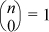

This section is a brief introduction to the theory and practice of error-correcting codes (ECCs). We limit our attention to binary forward error-correcting (FEC) block codes. This means that the symbol alphabet consists of just two symbols (which we denote 0 and 1), that the receiver can correct a transmission error without asking the sender for more information or for a retransmission, and that the transmissions consist of a sequence of fixed length blocks, called code words.
Section 15–2 describes the code independently discovered by R. W. Hamming and M. J. E. Golay before 1950 [Ham]. This code is single error-correcting (SEC), and a simple extension of it, also discovered by Hamming, is single error-correcting and, simultaneously, double error-detecting (SEC-DED).
Section 15–4 steps back and asks what is possible in the area of forward error correction. Still sticking to binary FEC block codes, the basic question addressed is: for a given block length (or code length) and level of error detection and correction capability, how many different code words can be encoded?
Section 15–2 is for readers who are primarily interested in learning the basics of how ECC works in computer memories. Section 15–4 is for those who are interested in the mathematics of the subject, and who might be interested in the challenge of an unsolved mathematical problem.
The reader is cautioned that over the past 50 years ECC has become a very big subject. Many books have been published on it and closely related subjects [Hill, LC, MS, and Roman, to mention a few]. Here we just scratch the surface and introduce the reader to two important topics and to some of the terminology used in this field. Although much of the subject of error-correcting codes relies very heavily on the notations and results of linear algebra, and, in fact, is a very nice application of that abstract theory, we avoid it here for the benefit of those who are not familiar with that theory.
The following notation is used throughout this chapter. The terms are defined in subsequent sections.
m Number of “information” or “message” bits
k Number of parity-check bits (“check bits,” for short)
n Code length, n = m + k
u Information bit vector, u0, u1, ... um – 1
p Parity check bit vector, p0, p1, ..., pk – 1
s Syndrome vector, s0, s1, ..., sk – 1
Hamming’s development [Ham] is a very direct construction of a code that permits correcting single-bit errors. He assumes that the data to be transmitted consists of a certain number of information bits u, and he adds to these a number of check bits p, such that if a block is received that has at most one bit in error, then p identifies the bit that is in error (which might be one of the check bits). Specifically, in Hamming’s code, p is interpreted as an integer that is 0 if no error occurred, and otherwise is the 1-origin index of the bit that is in error. Let m be the number of information bits, and k the number of check bits used. Because the k check bits must check themselves as well as the information bits, the value of p, interpreted as an integer, must range from 0 to m + k, which is m + k + 1 distinct values. Because k bits can distinguish 2k cases, we must have
This is known as the Hamming rule. It applies to any single-error correcting (SEC) binary FEC block code in which all of the transmitted bits must be checked. The check bits will be interspersed among the information bits in a manner described below.
Because p indexes the bit (if any) that is in error, the least significant bit of p must be 1 if the erroneous bit is in an odd position, and 0 if it is in an even position or if there is no error. A simple way to achieve this is to let the least significant bit of p, p0, be an even parity check on the odd positions of the block and to put p0 in an odd position. The receiver then checks the parity of the odd positions (including that of p0). If the result is 1, an error has occurred in an odd position, and if the result is 0, either no error occurred or an error occurred in an even position. This satisfies the condition that p should be the index of the erroneous bit, or be 0 if no error occurred.
Similarly, let the next-from-least significant bit of p, p1, be an even parity check of positions 2, 3, 6, 7, 10, 11, ... (in binary, 10, 11, 110, 111, 1010, 1011, ...), and put p1 in one of these positions. Those positions have a 1 in their second-from-least significant binary position number. The receiver checks the parity of these positions (including the position of p1). If the result is 1, an error occurred in one of those positions, and if the result is 0, either no error occurred or an error occurred in some other position.
Continuing, the third-from-least significant check bit, p2, is made an even parity check on those positions that have a 1 in their third-from-least significant position number, namely positions 4, 5, 6, 7, 12, 13, 14, 15, 20, ..., and p2 is put in one of those positions.
Putting the check bits in power-of-two positions (1, 2, 4, 8, ...) has the advantage that they are independent. That is, the sender can compute p0 independent of p1, p2, ... and, more generally, it can compute each check bit independent of the others.
As an example, let us develop a single error-correcting code for m = 4. Solving (1) for k gives k = 3, with equality holding. This means that all 2k possible values of the k check bits are used, so it is particularly efficient. A code with this property is called a perfect code.1
This code is called the (7, 4) Hamming code, which signifies that the code length is 7 and the number of information bits is 4. The positions of the check bits pi and the information bits ui are shown here.
Table 15–1 shows the entire code. The 16 rows show all 16 possible information bit configurations and the check bits calculated by Hamming’s method.
To illustrate how the receiver corrects a single-bit error, suppose the code word
1001110
is received. This is row 4 in Table 15–1 with bit 6 flipped. The receiver calculates the exclusive or of the bits in odd positions and gets 0. It calculates the exclusive or of bits 2, 3, 6, and 7 and gets 1. Lastly, it calculates the exclusive or of bits 4, 5, 6, and 7 and gets 1. Thus the error indicator, which is called the syndrome, is binary 110, or 6. The receiver flips the bit at position 6 to correct the block.
TABLE 15–1. THE (7,4) HAMMING CODE
For many applications, a single error-correcting code would be considered unsatisfactory, because it accepts all blocks received. A SEC-DED code seems safer, and it is the level of correction and detection most often used in computer memories.
The Hamming code can be converted to a SEC-DED code by adding one check bit, which is a parity bit (let us assume even parity) on all the bits in the SEC code word. This code is called an extended Hamming code [Hill, MS]. It is not obvious that it is SEC-DED. To see that it is, consider Table 15–2. It is assumed a priori that either 0, 1, or 2 transmission errors occur. As indicated in Table 15–2, if there are no errors, the overall parity (the parity of the entire n-bit received code word) will be even, and the syndrome of the (n – 1) -bit SEC portion of the block will be 0. If there is one error, then the overall parity of the received block will be odd. If the error occurred in the overall parity bit, then the syndrome will be 0. If the error occurred in some other bit, then the syndrome will be nonzero and it will indicate which bit is in error. If there are two errors, then the overall parity of the received block will be even. If one of the two errors is in the overall parity bit, then the other is in the SEC portion of the block. In this case, the syndrome will be nonzero (and will indicate the bit in the SEC portion that is in error). If the errors are both in the SEC portion of the block, then the syndrome will also be nonzero, although the reason is a bit hard to explain.
TABLE 15–2. ADDING A PARITY BIT TO MAKE A SEC-DED CODE
The reason is that there must be a check bit that checks one of the two bit positions, but not the other one. The parity of this check bit and the bits it checks will thus be odd, resulting in a nonzero syndrome. Why must there be a check bit that checks one of the erroneous bits but not the other one? To see this, first suppose one of the erroneous bits is in an even position and the other is in an odd position. Then, because one of the check bits (p0) checks all the odd positions and none of the even positions, the parity of the bits at the odd positions will be odd, resulting in a nonzero syndrome. More generally, suppose the erroneous bits are in positions i and j (with i ≠ j). Then, because the binary representations of i and j must differ in some bit position, one of them has a 1 at that position and the other has a 0 at that position. The check bit corresponding to this position in the binary integers checks the bits at positions in the code word that have a 1 in their position number, but not the positions that have a 0 in their position number. The bits covered by that check bit will have odd parity, and thus the syndrome will be nonzero. As an example, suppose the erroneous bits are in positions 3 and 7. In binary, the position numbers are 0...0011 and 0...0111. These numbers differ in the third position from the right, and at that position the number 7 has a 1 and the number 3 has a 0. Therefore, the bits checked by the third check bit (these are bits 4, 5, 6, 7, 12, 13, 14, 15, ...) will have odd parity.
Thus, referring to Table 15–2, the overall parity and the syndrome together uniquely identify whether 0, 1, or 2 errors occurred. In the case of one error, the receiver can correct it. In the case of two errors, the receiver cannot tell whether just one of the errors is in the SEC portion (in which case it could correct it) or both errors are in the SEC portion (in which case an attempt to correct it would result in incorrect information bits).
The overall parity bit could as well be a parity check on only the even positions, because the overall parity bit is easily calculated from that and the parity of the odd positions (which is the least significant check bit). More generally, the overall parity bit could as well be a parity check on the complement set of bits checked by any one of the SEC parity bits. This observation might save some gates in hardware.
It should be clear that the Hamming SEC code has minimum redundancy. That is, for a given number of information bits, it adds a minimum number of check bits that permit single error correction. This is so because by construction, just enough check bits are added so that when interpreted as an integer, they can index any bit in the code, with one state left over to denote “no errors.” In other words, the code satisfies inequality (1). Hamming shows that the SEC-DED code constructed from a SEC code by adding one overall parity bit is also of minimum redundancy. His argument is to assume that a SEC-DED code exists that has fewer check bits, and he derives from this a contradiction to the fact that the starting SEC code had minimum redundancy.
The middle column of Table 15–3 shows minimal solutions of inequality (1) for a range of values of m. The rightmost column simply shows that one more bit is required for a SEC-DED code. From this table one can see, for example, that to provide the SEC-DED level ECC for a memory word containing 64 information bits, eight check bits are required, giving a total memory word size of 72 bits.
TABLE 15–3. EXTRA BITS FOR ERROR CORRECTION/DETECTION
In the more mathematically oriented ECC literature, the term “Hamming code” is reserved for the perfect codes described above—that is, those with (n, m) = (3, 1), (7, 4), (15, 11), (31, 26), and so on. Similarly, the extended Hamming codes are the perfect SEC-DED codes described above. Computer architects and engineers often use the term to denote any of the codes that Hamming described, and some variations. The term “extended” is often understood.
The first IBM computer to use Hamming codes was the IBM Stretch computer (model 7030), built in 1961 [LC]. It used a (72, 64) SEC-DED code (not a perfect code). A follow-on machine known as Harvest (model 7950), built in 1962, was equipped with 22-track tape drives that employed a (22, 16) SEC-DED code. The ECCs found on modern machines are usually not Hamming codes, but rather are codes devised for some logical or electrical property, such as minimizing the depth of the parity check trees, and making them all the same length. Such codes give up Hamming’s simple method of determining which bit is in error, and instead use a hardware table lookup.
At the time of this writing (2012), most notebook PCs (personal computers) have no error checking in their memory systems. Desktop PCs may have none, or they may have a simple parity check. Server-class computers generally have ECC at the SEC-DED level.
In the early solid-state computers equipped with ECC memory, the memory was usually in the form of eight check bits and 64 information bits. A memory module (group of chips) might be built from, typically, nine 8-bit-wide chips. A word access (72 bits, including check bits) fetches eight bits from each of these nine chips. Each chip is laid out in such a way that the eight bits accessed for a single word are physically far apart. Thus, a word access references 72 bits that are physically somewhat separated. With bits interleaved in that way, if a few close-together bits in the same chip are altered, as, for example, by an alpha particle or cosmic ray hit, a few words will have single-bit errors, which can be corrected. Some larger memories incorporate a technology known as Chipkill. This allows the computer to continue to function even if an entire memory chip fails, for example, due to loss of power to the chip.
The interleaving technique can be used in communication applications to correct burst errors by interleaving the bits in time.
Today the organization of ECC memories is often more complicated than simply having eight check bits and 64 information bits. Modern server memories might have 16 or 32 information bytes (128 or 256 bits) checked as a single ECC word. Each DRAM chip may store two, three, or four bits in physically adjacent positions. Correspondingly, ECC is done on alphabets of four, eight, or 16 characters—a subject not discussed here. Because the DRAM chips usually come in 8- or 16-bit-wide configurations, the memory module often provides more than enough bits for the ECC function. The extra bits might be used for other functions, such as one or two parity bits on the memory address. This allows the memory to check that the address it receives is (probably) the address that the CPU generated.
In modern server-class machines, ECC might be used in different levels of cache memory, as well as in main memory. It might also be used in non-memory areas, such as on busses.
This section describes a code for which encoding and decoding can be efficiently implemented in software for a basic RISC. It does single error correction and double error detection on 32 information bits. The technique is basically Hamming’s.
We follow Hamming in using check bits in such a way that the receiver can easily (in software) determine whether zero, one, or two errors occurred, and if one error occurred it can easily correct it. We also follow Hamming in using a single overall parity bit to convert a SEC code to SEC-DED, and we assume the check bit values are chosen to make even parity on the check bit and the bits it checks. A total of seven check bits are required (Table 15–3).
Consider first just the SEC property, without DED. For SEC, six check bits are required. For implementation in software, the main difficulty with Hamming’s method is that it merges the six check bits with the 32 information bits, resulting in a 38-bit quantity. We are assuming the implementation is done on a 32-bit machine, and the information bits are in a 32-bit word. It would be very awkward for the sender to spread out the information bits over a 38-bit quantity and calculate the check bits into the positions described by Hamming. The receiver would have similar difficulties. The check bits could be moved into a separate word or register, with the 32 information bits kept in another word or register. But this gives an irregular range of positions that are checked by each check bit. In the scheme to be described, these ranges retain most of the regularity that they have in Hamming’s scheme (which ignores word boundaries). The regularity leads to simplified calculations.
The positions checked by each check bit are shown in Table 15–4. In this table, bits are numbered in the usual little-endian way, with position 0 being the least significant bit (unlike Hamming’s numbering).
TABLE 15–4. POSITIONS CHECKED BY THE CHECK BITS
Observe that each of the 32 information word bit positions is checked by at least two check bits. For example, position 6 is checked by p1 and p2 (and also by p5). Thus, if two information words differ in one bit position, the code words (information plus check bits) differ in at least three positions (the information bit that was corrupted and two or more check bits), so the code words are at a distance of at least three from one another (see “Hamming Distance” on page 343). Furthermore, if two information words differ in two bit positions, then at least one of p0 – p5 checks one of the positions, but not the other, so again the code words will be at least a distance of three apart. Therefore, the above scheme represents a code with minimum distance three (a SEC code).
Suppose a code word is transmitted to a receiver. Let u denote the information bits received, p denote the check bits received, and s (for syndrome) denote the exclusive or of p and the check bits calculated from u by the receiver. Then, examination of Table 15–4 reveals that s will be set as shown in Table 15–5, for zero or one errors in the code word.
TABLE 15–5. SYNDROME FOR ZERO OR ONE ERRORS
As an example, suppose information bit u4 is corrupted in transmission. Table 15–4 shows that u4 is checked by check bits p2 and p5. Therefore, the check bits calculated by the sender and receiver will differ in p2 and p5. In this scenario the check bits received are the same as those transmitted, so the syndrome will have bits 2 and 5 set—that is, it will be 100100.
If one of the check bits is corrupted in transmission (and no errors occur in the information bits), then the check bits received and those calculated by the receiver (which equal those calculated by the sender) differ in the check bit that was corrupted, and in no other bits, as shown in the last six rows of Table 15–5.
The syndromes shown in Table 15–5 are distinct for all 39 possibilities of no error or a single-bit error anywhere in the code word. Therefore, the syndrome identifies whether or not an error occurred, and if so, which bit position is in error. Furthermore, if a single-bit error occurred, it is fairly easy to calculate which bit is in error (without resorting to a table lookup) and to correct it. Here is the logic:
If s = 0, no error occurred.
If s = 011111, u0 is in error.
If s = 1xxxxx, with xxxxx nonzero, the error is in u at position xxxxx.
Otherwise, a single bit in s is set, the error is in a check bit, and the correct check bits are given by the exclusive or of the syndrome and the received check bits (or by the calculated check bits).
Under the assumption that an error in the check bits need not be corrected, this can be expressed as shown here, where b is the bit number to be corrected.
There is a hack that changes the second if-then-else construction shown above into an assignment statement.
To recognize double-bit errors, an overall parity bit is computed (parity of u31:0 and p5:0), and put in bit position 6 of p for transmission. Double-bit errors are distinguished by the overall parity being correct, but with the syndrome (s5:0) being nonzero. The reason the syndrome is nonzero is the same as in the case of the extended Hamming code, given on page 334.
Software that implements this code is shown in Figures 15–1 and 15–2. We assume the simple case of a sender and a receiver, and the receiver has no need to correct an error that occurs in the check bits or in the overall parity bit.
unsigned int checkbits(unsigned int u) {
/* Computes the six parity check bits for the
"information" bits given in the 32-bit word u. The
check bits are p[5:0]. On sending, an overall parity
bit will be prepended to p (by another process).
Bit Checks these bits of u
p[0] 0, 1, 3, 5, ..., 31 (0 and the odd positions).
p[1] 0, 2-3, 6-7, ..., 30-31 (0 and positions xxx1x).
p[2] 0, 4-7, 12-15, 20-23, 28-31 (0 and posns xx1xx).
p[3] 0, 8-15, 24-31 (0 and positions x1xxx).
p[4] 0, 16-31 (0 and positions 1xxxx).
p[5] 1-31 */
unsigned int p0, p1, p2, p3, p4, p5, p6, p;
unsigned int t1, t2, t3;
// First calculate p[5:0] ignoring u[0].
p0 = u ^ (u >> 2);
p0 = p0 ^ (p0 >> 4);
p0 = p0 ^ (p0 >> 8);
p0 = p0 ^ (p0 >> 16); // p0 is in posn 1.
t1 = u ^ (u >> 1);
p1 = t1 ^ (t1 >> 4);
p1 = p1 ^ (p1 >> 8);
p1 = p1 ^ (p1 >> 16); // p1 is in posn 2.
t2 = t1 ^ (t1 >> 2);
p2 = t2 ^ (t2 >> 8);
p2 = p2 ^ (p2 >> 16); // p2 is in posn 4.
t3 = t2 ^ (t2 >> 4);
p3 = t3 ^ (t3 >> 16); // p3 is in posn 8.
p4 = t3 ^ (t3 >> 8) // p4 is in posn 16.
p5 = p4 ^ (p4 >> 16); // p5 is in posn 0.
p = ((p0>>1) & 1) | ((pl>>l) & 2) | ((p2>>2) & 4) |
((p3>>5) & 8) | ((p4>>12) & 16) | ((p5 & 1) << 5);
p = p ^ (-(u & 1) & 0x3F); // Now account for u[0].
return p;
}
FIGURE 15–1. Calculation of check bits.
int correct(unsigned int pr, unsigned int *ur) {
/* This function looks at the received seven check
bits and 32 information bits (pr and ur) and
determines how many errors occurred (under the
presumption that it must be 0, 1, or 2). It returns
with 0, 1, or 2, meaning that no errors, one error, or
two errors occurred. It corrects the information word
received (ur) if there was one error in it. */
unsigned int po, p, syn, b;
po = parity(pr ^ *ur); // Compute overall parity
// of the received data.
p = checkbits(*ur); // Calculate check bits
// for the received info.
syn = p ^ (pr & 0x3F); // Syndrome (exclusive of
// overall parity bit).
if (po == 0) {
if (syn == 0) return 0; // If no errors, return 0.
else return 2; // Two errors, return 2.
}
// One error occurred.
if (((syn - 1) & syn) == 0) // If syn has zero or one
return 1; // bits set, then the
// error is in the check
// bits or the overall
// parity bit (no
// correction required).
// One error, and syn bits 5:0 tell where it is in ur.
b = syn - 31 - (syn >> 5); // Map syn to range 0 to 31.
// if (syn == 0x1f) b = 0; // (These two lines equiv.
// else b = syn & 0x1f; // to the one line above.)
*ur = *ur ^ (1 << b); // Correct the bit.
return 1;
}
FIGURE 15–2. The receiver’s actions.
To compute the check bits, function checkbits first ignores information bit u0 and computes
except omitting line i when computing check bit ki, for 0 ≤ i ≤ 4. This puts pi in various positions of word x, as shown in Figure 15–1. For p5, all the above assignments are used. This is where the regularity of the pattern of bits checked by each check bit pays off; a lot of code commoning can be done. This reduces what would be 4×5 + 5 = 25 such assignments to 15, as shown in Figure 15–1.
Incidentally, if the computer has an instruction for computing the parity of a word, or has the population count instruction (which puts the word parity in the least significant bit of the target register), then the regular pattern is not needed. On such a machine, the check bits might be computed as
p0 = pop(u ^ 0xAAAAAAAB) & 1;
p1 = pop(u & 0xCCCCCCCD) & 1;
and so forth.
After packing the six check bits into a single quantity p, the checkbits function accounts for information bit u0 by complementing all six check bits if u0 = 1. (See Table 15-4; p5 must be complemented because u0 was erroneously included in the calculation of p5 up to this point.)
This section continues to focus on the binary FEC block codes, but a little more generally than the codes described in Section 15–2. We drop the assumption that the block consists of a set of “information” bits and a distinct set of “check” bits, and any implication that the number of code words must be a power of 2. We also consider levels of error correction and detection capability greater than SEC and SEC-DED. For example, suppose you want a double error-correcting code for a binary representation of decimal digits. If the code has 16 code words (with ten being used to represent the decimal digits and six being unused), the length of the code words must be at least 11 bits. But if a code with only 10 code words is used, the code words can be of length 10 bits. (This is shown in Table 15–8 on page 351, in the column for d = 5, as is explained below.)
A code is simply a set of code words, and for our purposes the code words are binary strings all of the same length which, as mentioned above, is called the code length. The number of code words in the set is called the code size. We make no interpretation of the code words; they might represent alphanumeric characters or pixel values in a picture, for example.
As a trivial example, a code might consist of the binary integers from 0 to 7, with each bit repeated three times:
{000000000, 000000111, 000111000, 000111111, 111000000, ... 111111111}.
Another example is the two-out-of-five code, in which each code word has exactly two 1-bits:
{00011, 00101, 00110, 01001, 01010, 01100, 10001, 10010, 10100, 11000}.
The code size is 10, and thus it is suitable for representing decimal digits. Notice that if code word 00110 is considered to represent decimal 0, then the remaining values can be decoded into digits 1 through 9 by giving the bits weights of 6, 3, 2, 1, and 0, in left-to-right order.
The code rate is a measure of the efficiency of a code. For a code like Hamming’s, this can be defined as the number of information bits divided by the code length. For the Hamming code discussed above, it is 4/7 ≈ 0.57. More generally, the code rate is defined as the log base 2 of the code size, divided by the code length. The simple codes above have rates of log2(8)/9 ≈ 0.33 and log2(10)/5 ≈ 0.66, respectively.
The central concept in the theory of ECC is that of Hamming distance. The Hamming distance between two words (of equal length) is the number of bit positions in which they differ. Put another way, it is the population count of the exclusive or of the two words. It is appropriate to call this a distance function because it satisfies the definition of a distance function used in linear algebra:
Here d(x, y) denotes the Hamming distance between code words x and y, which for brevity we will call simply the distance between x and y.
Suppose a code has a minimum distance of 1. That is, there are two words x and y in the set that differ in only one bit position. Clearly, if x were transmitted and the bit that makes it distinct from y were flipped due to a transmission error, then the receiver could not distinguish between receiving x with a certain bit in error and receiving y with no errors. Hence in such a code it is impossible to detect even a 1-bit error, in general.
Suppose now that a code has a minimum distance of 2. Then if just one bit is flipped in transmission, an invalid code word is produced, and thus the receiver can (in principle) detect the error. If two bits are flipped, a valid code word might be transformed into another valid code word. Thus, double-bit errors cannot be detected. Furthermore, single-bit errors cannot be corrected. This is because if a received word has one bit in error, then there may be two code words that are one bit-change away from the received word, and the receiver has no basis for deciding which is the original code word.
The code obtained by appending a single parity bit is in this category. It is shown below for the case of three information bits (m = 3). The rightmost bit is the parity bit, chosen to make even parity on all four bits. The reader may verify that the minimum distance between code words is 2.
Actually, adding a single parity bit permits detecting any odd number of errors, but when we say that a code permits detecting k-bit errors, we mean all errors up to k bits.
Now consider the case in which the minimum distance between code words is 3. If any one or two bits is flipped in transmission, an invalid code word results. If just one bit is flipped, the receiver can (we imagine) try flipping each of the received bits one at a time, and in only one case will a code word result. Hence in such a code the receiver can detect and correct a single-bit error. A double-bit error might appear to be a single-bit error from another code word, and thus the receiver cannot detect double-bit errors.
Similarly, it is easy to reason that if the minimum distance of a code is 4, the receiver can correct all single-bit errors and detect all double-bit errors (it is a SEC-DED code). As mentioned above, this is the level of capability often used in computer memories.
Table 15–6 summarizes the error-correction and -detection capabilities of a block code based on its minimum distance.
TABLE 15–6. NUMBER OF BITS CORRECTED/DETECTED
Error-correction capability can be traded for error detection. For example, if the minimum distance of a code is 3, that redundancy can be used to correct no errors but to detect single- or double-bit errors. If the minimum distance is 5, the code can be used to correct single-bit errors and detect 3-bit errors, or to correct no errors but to detect 4-bit errors, and so forth. Whatever is subtracted from the “Correct” column of Table 15–6 can be added to the “Detect” column.
Up to this point we have asked, “Given a number of information bits m and a desired minimum distance d, how many check bits are required?” In the interest of generality, we will now turn this question around and ask, “For a given code length n and minimum distance d, how many code words are possible?” Thus, the number of code words need not be an integral power of 2.
Following [Roman] and others, let A(n, d) denote the largest possible code size for a (binary) code with length n and minimum distance d. The remainder of this section is devoted to exploring some of what is known about this function. Determining its values has been called the main coding theory problem [Hill, Roman]. Throughout this section we assume that n ≥ d ≥ 1.
It is nearly trivial that
because there are 2n distinct words of length n.
For minimum distance 2, we know from the single parity bit example that A(n, 2) ≥ 2n–1. But A(n, 2) cannot exceed 2n–1 for the following reason. Suppose there is a code of length n and minimum distance 2 that has more than 2n–1 code words. Delete any one column from the code words. (We envision the code words as being arranged in a matrix much like that of Table 15–1 on page 333.) This produces a code of length n – 1 and minimum distance at least 1 (deleting a column can reduce the minimum distance by at most 1), and of size exceeding 2n – 1. Thus, it has A(n – 1, 1) > 2n – 1, contradicting Equation (2). Hence,
A(n ,2) = 2n – 1.
That was not difficult. What about A(n, 3)? That is an unsolved problem, in the sense that no formula or reasonably easy means of calculating it is known. Of course, many specific values of A (n, 3) are known, and some bounds are known, but the exact value is unknown in most cases.
When equality holds in (1), it represents the solution to this problem for the case d = 3. Letting n = m + k, (1) can be rewritten
Here, m is the number of information bits, so 2m is the maximum number of code words. Hence, we have
with equality holding when 2n/(n + 1) is an integer (by Hamming’s construction).
For n = 7, this gives A(7, 3) = 16, which we already know from Section 15–2. For n = 3 it gives A (3, 3) ≤ 2, and the limit of 2 can be realized with code words 000 and 111. For n = 4 it gives A (4, 3) ≤ 3.2, and with a little doodling you will see that it is not possible to get three code words of length 4 with d = 3. Thus, when equality does not hold in (3), it merely gives an upper bound, quite possibly not realizable, on the maximum number of code words.
An interesting relation is that for n ≥ 2,
Therefore, adding 1 to the code length at most doubles the number of code words possible for the same minimum distance d. To see this, suppose you have a code of length n, distance d, and size A(n, d). Choose an arbitrary column of the code. Either half or more of the code words have a 0 in the selected column, or half or more have a 1 in that position. Of these two subsets, choose one that has at least A(n, d)/2 code words, form a new code consisting of this subset, and delete the selected column (which is either all 0’s or all 1’s). The resulting set of code words has n reduced by 1, has the same distance d, and has at least A (n, d)/2 code words. Thus, A(n – 1, d) ≥ A (n, d)/ 2, from which inequality (4) follows.
A useful relation is that if d is even, then
To see this, suppose you have a code C of length n and minimum distance d, with d odd. Form a new code by appending to each word of C a parity bit, let us say to make the parity of each word even. The new code has length n + 1 and has the same number of code words as does C. It has minimum distance d + 1. For if two words of C are a distance x apart, with x odd, then one word must have even parity and the other must have odd parity. Thus, we append a 0 in the first case and a 1 in the second case, which increases the distance between the words to x + 1. If x is even, we append a 0 to both words, which does not change the distance between them. Because d is odd, all pairs of words that are a distance d apart become distance d + 1 apart. The distance between two words more than d apart either does not change or increases. Therefore the new code has minimum distance d + 1. This shows that if d is odd, then A(n+ 1, d + 1) ≥ A(n, d), or, equivalently, A(n, d) ≥ A(n – 1, d – 1) for even d ≥ 2.
Now suppose you have a code of length n and minimum distance d ≥ 2 (d can be odd or even). Form a new code by eliminating any one column. The new code has length n – 1, minimum distance at least d – 1, and is the same size as the original code (all the code words of the new code are distinct because the new code has minimum distance at least 1). Therefore A(n – 1, d – 1) ≥ A (n, d). This establishes Equation (5).
Upper and lower bounds on A(n, d), for any d ≥ 1, can be derived by thinking in terms of n-dimensional spheres. Given a code word, think of it as being at the center of a “sphere” of radius r, consisting of all words at a Hamming distance r or less from it.
How many points (words) are in a sphere of radius r? First, consider how many points are in the shell at distance exactly r from the central code word. This is given by the number of ways to choose r different items from n, ignoring the order of choice. We imagine the r chosen bits as being complemented to form a word at distance exactly r from the central point. This “choice” function, often written , can be calculated from2
Thus, , , , , and so forth.
The total number of points in a sphere of radius r is the sum of the points in the shells from radius 0 to r:
There seems to be no simple formula for this sum [Knu1].
From this it is easy to obtain bounds on A(n, d). First, assume you have a code of length n and minimum distance d, and it consists of M code words. Surround each code word with a sphere, all of the same maximal radius such that no two spheres have a point in common. This radius is (d – 1)/2 if d is odd, and is (d – 2)/2 if d is even (see Figure 15–3). Because each point is in at most one sphere, the total number of points in the M spheres must be less than or equal to the total number of points in the space. That is,
This holds for any M, hence for M = A(n, d), so that
This is known as the sphere-packing bound, or the Hamming bound.
FIGURE 15–3. Maximum radius that allows correcting points within a sphere.
The sphere idea also easily gives a lower bound on A(n, d). Assume again that you have a code of length n and minimum distance d, and it has the maximum possible number of code words—that is, it has A(n, d) code words. Surround each code word with a sphere of radius d – 1. Then these spheres must cover all 2n points in the space (possibly overlapping). For if not, there would be a point that is at a distance d or more from all code words, and that is impossible because such a point would be a code word. Thus, we have a weak form of the Gilbert-Varshamov bound:
There is the strong form of the G-V bound, which applies to linear codes. Its derivation relies on methods of linear algebra which, important as they are to the subject of linear codes, are not covered in this short introduction to error-correcting codes. Suffice it to say that a linear code is one in which the sum (exclusive or) of any two code words is also a code word. The Hamming code of Table 15–1 is a linear code. Because the G-V bound is a lower bound on linear codes, it is also a lower bound on the unrestricted codes considered here. For large n, it is the best known lower bound on both linear and unrestricted codes.
The strong G-V bound states that A(n, d) ≥ 2m, where m is the largest integer such that
That is, it is the value of the right-hand side of this inequality rounded down to the next strictly smaller integral power of 2. The “strictness” is important for cases such as (n, d) = (8, 3), (16, 3) and (the degenerate case) (6, 7).
Combining these results:
where GP2LT denotes the greatest integral power of 2 (strictly) less than its argument.
Table 15–7 gives the values of these bounds for some small values of n and d. A single number in an entry means the lower and upper bounds given by (6) are equal.
TABLE 15–7. THE G - V AND HAMMING BOUNDS ON A(n, d)
If d is even, bounds can be computed directly from (6) or, making use of Equation (5), they can be computed from (6) with d replaced with d – 1 and n replaced with n – 1 in the two bounds expressions. It turns out that the latter method always results in tighter or equal bounds. Therefore, the entries in Table 15–7 were calculated only for odd d. To access the table for even d, use the values of d shown in the heading and the values of n shown at the left.
The bounds given by (6) can be seen to be rather loose, especially for large d. The ratio of the upper bound to the lower bound diverges to infinity with increasing n. The lower bound is particularly loose. Over a thousand papers have been written describing methods to improve these bounds, and the results as of this writing are shown in Table 15–8 [Agrell, Brou; where they differ, Table 15–8. shows the tighter bounds].
TABLE 15–8. BEST KNOWN BOUNDS ON A(n, d)
The cases of (n, d) = (7, 3), (15, 3), and (23, 7) are perfect codes, meaning that they achieve the upper bound given by (6). This definition is a generalization of that given on page 333. The codes for which n is odd and n = d are also perfect; see exercise 8.
We conclude this chapter by pointing out that the idea of minimum distance over an entire code, which leads to the ideas of p-bit error detection and q-bit error correction for some p and q, is not the only criterion for the “power” of a binary FEC block code. For example, work has been done on codes aimed at correcting burst errors. [Etzion] has demonstrated a (16, 11) code, and others, that can correct any single-bit error and any error in two consecutive bits, and is perfect, in a sense not discussed here. It is not capable of general double-bit error detection. The (16, 11) extended Hamming code is SEC-DED and is perfect. Thus, his code gives up general double-bit error detection in return for double-bit error correction of consecutive bits. This is, of course, interesting because in many applications errors are likely to occur in short bursts.
1. Show a Hamming code for m = 3 (make a table similar to Table 15-1).
2. In a certain application of an SEC code, there is no need to correct the check bits. Hence the k check bits need only check the information bits, but not themselves. For m information bits, k must be large enough so that the receiver can distinguish m + 1 cases: which of the m bits is in error, or no error occurred. Thus, the number of check bits required is given by 2k ≥ m + 1. This is a weaker restriction on k than is the Hamming rule, so it should be possible to construct, for some values of m, an SEC code that has fewer check bits than those required by the Hamming rule. Alternatively, one could have just one value to signify that an error occurred somewhere in the check bits, without specifying where. This would lead to the rule 2k ≥ m + 2.
What is wrong with this reasoning?
3. (Brain teaser) Given m, how would you find the least k that satisfies inequality (1)?
4. Show that the Hamming distance function for any binary block code satisfies the triangle inequality: if x and y are code vectors and d(x, y) denotes the Hamming distance between them, then
d (x, z) ≤ d (x, y) + d (y, z).
5. Prove: A(2n, 2d) ≥ A(n, d).
6. Prove the “singleton bound”: A(n, d) ≤ 2n – d + 1.
7. Show that the notion of a perfect code as equality in the right-hand portion of inequality (6) is a generalization of the Hamming rule.
8. What is the value of A(n, d) if n = d? Show that for odd n, these codes are perfect.
9. Show that if n is a multiple of 3 and d = 2n/3, then A(n, d) = 4.
10. Show that if d > 2n/3, then A(n, d) = 2.
11. A two-dimensional parity check scheme for 64 information bits arranges the information bits u0 ... u63 into an 8×8 array, and appends a parity bit to each row and column as shown below.
The ri are parity check bits on the rows, and the ci are parity check bits on the columns. The “corner” check bit could be parity check on the row or the column of check bits (but not both); it is shown as a check on the bottom row (check bits c0 through c7).
Comment on this scheme. In particular, is it SEC-DED? Is its error-detection and -correction capability significantly altered if the corner bit r8 is omitted? Is there any simple relation between the value of the corner bit if it’s a row sum or a column sum?